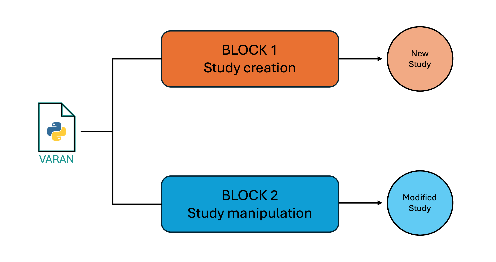
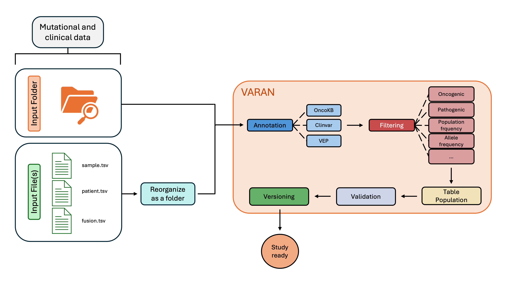
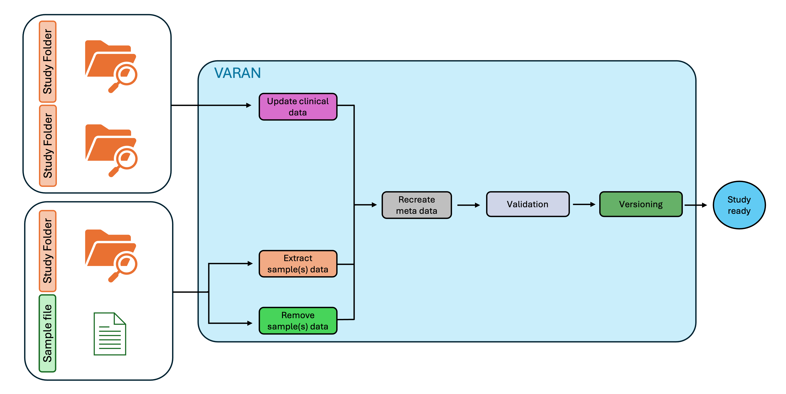

User guide
The Varan application is organized into two distinct functionalities, each designed to handle different tasks and requiring specific inputs:
- Study Creation: This function allows users to initiate a new study folder from scratch, setting up all the necessary configurations and files.
- Study Manipulation: This functionality supports updating, extracting, or removing samples from an already existing study folder.

To ensure transparency and traceability, the system implements the following features:
- Versioning: Each study is automatically versioned (e.g.,
study_v1,study_v2, etc.), allowing clear tracking of changes and updates over time. - Detailed Reports: For each version, a comprehensive report is generated, which includes the filters applied, the configuration used in the study, the number of samples and patients, and a comparison with previous versions to track the study's evolution.
- Validation Check: Before uploading a study to cBioPortal, the system performs a validation to confirm the upload can be executed successfully.
⚠️ Be warned that files succeeding this validation may still fail to load (correctly).
Study Creation

Input Preparation
To create a new study, Varan accepts two types of input:
- Folder Input: a folder containing all the necessary data files.
- File Input: a file containing the paths to the data files.
Both formats are supported for processing, and you can choose the one that best suits your workflow.
Folder
The user must organize an input folder containing all of the vcf and tsv files requested following the structure reported below:
input_folder/
├── CNV
│ ├── 001.vcf
│ ├── 002.vcf
│ └── 003.vcf
├── SNV
│ ├── 001.vcf
│ ├── 002.vcf
│ └── 003.vcf
├── CombinedOutput
│ ├── 111_CombinedVariantOutput.tsv
│ ├── 222_CombinedVariantOutput.tsv
│ └── 333_CombinedVariantOutput.tsv
├── FUSIONS
│ └── Fusions.tsv
├── sample.tsv
└── patient.tsv
Where:
- SNV folder contains all VCF files related to single nucleotide variants.
- CNV folder contains all VCF files related to copy number variants.
- CombinedVariantOutput folder contains all the Combined Variant Output files in TSV format, named based on the patient ID. These files include information about TMB, MSI, and Fusions.
- FUSIONS folder contains the template fusion.tsv, which can be filled with fusion data if the Combined Variant Output files are unavailable.
- sample.tsv file is a template for clinical data of the samples.
- patient.tsv file is a template for clinical data of the patients.
File(s)
The user must compile several input files (by filling in specific templates):
- sample.tsv file is a template for clinical data of the samples; ⚠️ mandatory.
- patient.tsv file is a template for clinical data of the patients; optional.
- fusions.tsv file is a template for fusions' information; optional.
Templates
For both folder-based and file-based input, users are required to complete the provided templates. The following section outlines the structure of these templates:
sample.tsv
The following table shows the required fields for the sample clinical data (this will generate the data_clinical_sample.txt file).
⚠️ This file is required for Varan analysis!
| SAMPLE_ID | PATIENT_ID | MSI | TMB | MSI_THR | TMB_THR | ONCOTREE_CODE | snv_path | cnv_path | comb_path | ... |
|---|---|---|---|---|---|---|---|---|---|---|
| 0000001_DNA | 11111111 | 1 | 12 | BOWEL | path_to_snv | path_to_cnv | path_to_combined_output | ... |
The obligatory fields to keep are:
- SAMPLE_ID: IDs of all samples of interest.
- PATIENT_ID: IDs of all patients of interest.
- MSI: MSI value for each of the samples.
- TMB: TMB value for each of the samples.
- MSI_THR: MSI categorization based on the threshold set in the conf.ini file.
- TMB_THR: TMB categorization based on the threshold set in the conf.ini file.
- ONCOTREE_CODE: code to associate for the oncoKB annotation.
⚠️ The user can add new columns starting from the last one.
patient.tsv
This template must be filled by the user with all disposable patients' clinical info and will be used to create the data_clinical_patient.txt.
⚠️ This file is optional.
| PATIENT_ID | AGE | SEX | ... |
|---|---|---|---|
| 11111111 | 45 | F | ... |
The obligatory fields to keep are:
- PATIENT_ID: IDs of all patients of interest.
- AGE: Age all patients of interest.
- SEX: Sex all patients of interest.
fusion.tsv
This template must be filled by the user with all disposable fusion info and will be used to create the data_sv.txt.
⚠️ This file is optional.
| Sample_Id | SV_Status | Site1_Hugo_Symbol | Site2_Hugo_Symbol | ... |
|---|---|---|---|---|
| 0000001_DNA | SOMATIC | APC | BRCA1 | ... |
The obligatory fields to keep are:
- Sample_Id: IDs of all sample of interest
- SV_Status: fusion type
- Site1_Hugo_Symbol: first gene involved in fusion
- Site2_Hugo_Symbol: second gene involved in fusion
Configuration File
The next step to start using Varan is to correctly configure the conf.ini file.
⚠️ In the next subparagraph, for each field the type of variable requested will be inserted between angle brackets <>. For string, two possible entries can be found: < 'string' > and < string >. In the first case, it is requested to insert text inside quotation marks (i.e. DESCRIPTION='this is the description'), while on the other one, quotation marks are not requested (i.e. PROJECT_NAME=study).
⚠️ For Docker, a partially pre-filled conf.ini file is provided, with some paths already configured.
⚠️ Only the fields from the conf.ini file that are relevant to this functionality will be displayed below.
Paths
This section allows you to specify the paths for vcf2maf (VCF2MAF), ClinVar (CLINV), fasta (REF_FASTA), VEP (VEP_PATH), and its cache (VEP_DATA). In the CACHE section, you can set the Ensembl version (e.g., 111).
[Paths] VCF2MAF = < string > CLINV = < string > REF_FASTA = < string > VEP_PATH = < string > VEP_DATA = < string > CACHE = < string >
⚠️ The reference genome must be the same used for the VCFs annotation.
Multiple
In this section, it's possible to specify the paths in case of multiple SNV, CNV, and/or Combined Variant Output files analysis.
[Multiple] SNV= < string > CNV= < string > COMBOUT= < string >
⚠️ This section has to be filled only in case of input by file.
Zip
In this section, you can decide how to manage MAF and SNV_FILTERED files.
[Zip] ZIP_MAF = < boolean > ZIP_SNV_FILTERED = < boolean >
OncoKB
In this section, it's possible to insert the personal oncoKB key. This key is required to execute the oncoKB annotation.
[OncoKB] ONCOKB= < string >
⚠️ You can request the oncoKB key here
Project
In this section, it's possible to specify project info like study name, ID, description, and profile. These info will be inserted in meta files.
[Project] PROJECT_ID = < string > PROJECT_NAME = < string > DESCRIPTION = < 'string' > PROFILE_MUT = < 'string' > PROFILE_CNA = < 'string' > PROFILE_CNA_HG19 = < 'string' > PROFILE_SV = < 'string' >
Filters
Here, it is possible to specify the filters' threshold to apply to SNV MAF files. For more information, refer to filters section.
[Filters] t_VAF_min = < float > t_VAF_max = < float > t_VAF_min_novel = < float > AF = < string > drop_NA_AF = < boolean > ONCOKB_FILTER = < ['string','string',...] > CLIN_SIG = < ['string','string',...] > CONSEQUENCES = < ['string','string',...] > POLYPHEN = < ['string','string',...] > IMPACT = < ['string','string',...] > SIFT = < ['string','string',...] >
⚠️ The AF field can be populated with < / > / <= />= val (i.e., AF = <0.005).
Cna
In this section, the user can insert CNV genotypes of interest, ploidy, and decide whether or not to apply the CNVkit formula for copy number variation analysis.
[Cna] HEADER_CNV = < ['string','string',...] > PLOIDY = < int > CNVkit = < boolean >
⚠️ Ploidy will be used to evaluate copy number discretization using cnvkit formula.
TMB
Here TMB thresholds can be specified.
[TMB]
THRESHOLD_TMB = < {'string':'string', 'string':'string', ...} >
i.e. THRESHOLD = {'Low':'<=5', 'Medium':'<10', 'High':'>=10'} where the string before ':' is the label assigned to TMB value, while the other is the specific threshold (i.e. for a sample with TMB=15, a label 'High' will be reported in the clinical sample data).
MSI
Here MSI thresholds for sites and values can be specified.
[MSI] THRESHOLD_SITES = < string > THRESHOLD_MSI = < string >⚠️ THRESHOLD_SITES value will be used only if MSI information is extracted from Combined Variant Output files. If MSI is directly reported as a value inside the input tsv, only THRESHOLD_MSI will be applied.
⚠️ Both THRESHOLD_SITES and THRESHOLD_MSI can be populated with < / > / <= / >= val (i.e., THRESHOLD_MSI = <20).
FUSION
Here Fusions thresholds can be specified.
[FUSION] THRESHOLD_FUSION = < string >⚠️ THRESHOLD can be populated with < / > / <= / >= val (i.e., THRESHOLD_FUSION = >=15).
ClinicalSample
Users can customize column names and data types for the data_clinical_sample.txt file.
[ClinicalSample] HEADER_SAMPLE_SHORT = < ['string','string',...] > HEADER_SAMPLE_LONG = < ['string','string',...] > HEADER_SAMPLE_TYPE = < ['string','string',...] >⚠️ HEADER_SAMPLE_TYPE accepts only STRING, NUMBER, BOOLEAN. If a different type is inserted, an error will be raised by Varan. ⚠️ If these fields are left empty, a default Header will be produced.
ClinicalPatient
Users can customize column names and data types for the data_clinical_patient.txt file.
[ClinicalPatient] HEADER_PATIENT_SHORT = < ['string','string',...] > HEADER_PATIENT_LONG = < ['string','string',...] > HEADER_PATIENT_TYPE = < ['string','string',...] >⚠️ HEADER_PATIENT_TYPE accepts only STRING, NUMBER, BOOLEAN. If a different type is inserted, an error will be raised by Varan.
⚠️ If these fields are left empty, a default Header will be produced.
Annotations
In this section, it's possible to insert manual notes that will appear in the report_VARAN.html file.
[Annotations] ANNOTATIONS = < ['string','string',...] >
Launch Varan
Options
The available options for creating a study with Varan are:
| Options | Description | Type | Required |
|---|---|---|---|
| -i --input | Add this option to insert the path of the input (folder or file(s)) |
string/list | Yes |
| -o --output_folder | Add this option to insert the path where to save the output folder |
string | Yes |
| -c --cancer | Add this option to specify the cancer type |
string | Yes |
| -f --filter | Add this option to filter out variants from VCF/MAF, followed by the appropriate letters corresponding to the filters you wish to apply. More info here |
string | No |
| -k --onocoKB | Add this option to annotate with oncoKB |
boolean | No |
| -t --analysis_Type | Add this option to specify the type of file (SNV, CNV, Fusion, or Tab) to analyze. If not specified, all analysis will be done |
string | No |
| -w --overWrite | Add this option to overwrite an already existing output folder |
boolean | No |
| -R --resume | Add this option to resume an already started analysis. |
boolean | No |
| -m --multiple | Add this option to specify that the input is a multi-sample vcf file (a single VCF containing information from multiple patients) |
boolean | No |
Filtering
Use the following letters after the -f option to apply the corresponding filters described in the table above. You can specify multiple letters at once to apply multiple filters simultaneously:
| Letter | Description |
|---|---|
| d | Filters SNV mutations with ALT="." and FILTER ≠"PASS". |
| p | Filters MAF mutations with FILTER ≠"PASS". |
| v | Filters MAF mutations with vaf values (t_VF column) not included in the interval [t_VAF_min; t_VAF_max] specified in the conf.ini file. |
| n | Applies a specific VAF filter for new mutations (dbSNP_RS = "novel"), excluding new MAF mutations with vaf not included in the interval specified in the conf.ini file, t_VAF_min_novel. |
| a | Filters MAF mutations with AF values not included in the interval specified in the conf.ini file. You can choose whether to remove or keep mutations without a value for this column using the 'drop_NA_AF' setting. |
| o | Filters MAF mutations with ONCOGENIC values different from those specified in the conf.ini file under the ONCOKB_FILTER field. This requires the OncoKB annotation (-k). |
| c | Filters MAF mutations with CLIN_SIG values equal to those specified in the conf.ini file under the CLIN_SIG field. |
| q | Filters MAF mutations with Consequences values different from those specified in the conf.ini file under the CONSEQUENCES field. |
| y | Filters MAF mutations with PolyPhen annotations different from those specified in the conf.ini file under the POLYPHEN field. |
| i | Filters MAF mutations with IMPACT annotations equal to those specified in the conf.ini file under the IMPACT field. |
| s | Filters MAF mutations with SIFT annotations equal to those specified in the conf.ini file under the SIFT field. |
Examples
To launch Varan docker version is required to mount several volumes (-v) for granting a correct functioning.
docker run --rm -it -v <input_folder>:/input -v <output_folder>:/output -v <vep_cache_path>:/vep_cache -v <genomes_folder>:/ref_fasta -v <conf.ini>:/conf.ini varan <commands>
Ex 1) Launch Varan base analysis with input folder:
Run this command to process the contents of the input folder
docker run --rm -it -v <input_folder>:/input -v <output_folder>:/output -v <vep_cache_path>:/vep_cache -v <genomes_folder>:/ref_fasta varan <commands> -v <conf.ini>:/conf.ini varan -i <path_input_folder> -o /output/<output_name> -c <type_of_cancer>
Ex 2) Launch Varan base analysis with input file:
Run one of these commands to process the contents of the input file(s):
- If you have sample.tsv and patient.tsv as input:
docker run --rm -it -v <input_folder>:/input -v <output_folder>:/output -v <vep_cache_path>:/vep_cache -v <genomes_folder>:/ref_fasta -v <conf.ini>:/conf.ini varan -i sample.tsv patient.tsv -o /output/<output_name> -c <type_of_cancer>
docker run --rm -it -v <input_folder>:/input -v <output_folder>:/output -v <vep_cache_path>:/vep_cache -v <genomes_folder>:/ref_fasta -v <conf.ini>:/conf.ini varan -i sample.tsv "" fusion.tsv -o /output/<output_name> -c <type_of_cancer>
docker run --rm -it -v <input_folder>:/input -v <output_folder>:/output -v <vep_cache_path>:/vep_cache -v <genomes_folder>:/ref_fasta -v <conf.ini>:/conf.ini varan -i sample.tsv patient.tsv fusion.tsv -o /output/<output_name> -c <type_of_cancer>
Ex 3) Multiple vcf analysis:
Run this command to specify that your input is a multi-vcf file or folder:
docker run --rm -it -v <input_folder>:/input -v <output_folder>:/output -v <vep_cache_path>:/vep_cache -v <genomes_folder>:/ref_fasta -v <conf.ini>:/conf.ini varan -i <input_folder> -o /output/<output_name> -c <type_of_cancer> -m
Ex 4) Overwrite analysis:
Run this command to overwrite the output folder:
docker run --rm -it -v <input_folder>:/input -v <output_folder>:/output -v <vep_cache_path>:/vep_cache -v <genomes_folder>:/ref_fasta -v <conf.ini>:/conf.ini varan -i <input_folder> -o /output/<output_name> -c <type_of_cancer> -w
Ex 5) Resume analysis:
Run this command to resume an already started analysis:
docker run --rm -it -v <input_folder>:/input -v <output_folder>:/output -v <vep_cache_path>:/vep_cache -v <genomes_folder>:/ref_fasta -v <conf.ini>:/conf.ini varan -i <input_folder> -o /output/<output_name> -c <type_of_cancer> -R
Ex 6) Specify analysis:
Run one of these commands to specify the analysis' type:
- snv -> only snv analysis.
docker run --rm -it -v <input_folder>:/input -v <output_folder>:/output -v <vep_cache_path>:/vep_cache -v <genomes_folder>:/ref_fasta -v <conf.ini>:/conf.ini varan -i <input_folder> -o /output/<output_name> -c <type_of_cancer> -t snv
docker run --rm -it -v <input_folder>:/input -v <output_folder>:/output -v <vep_cache_path>:/vep_cache -v <genomes_folder>:/ref_fasta -v <conf.ini>:/conf.ini varan -i <input_folder> -o /output/<output_name> -c <type_of_cancer> -t cnv
docker run --rm -it -v <input_folder>:/input -v <output_folder>:/output -v <vep_cache_path>:/vep_cache -v <genomes_folder>:/ref_fasta -v <conf.ini>:/conf.ini varan -i <input_folder> -o /output/<output_name> -c <type_of_cancer> -t fus
docker run --rm -it -v <input_folder>:/input -v <output_folder>:/output -v <vep_cache_path>:/vep_cache -v <genomes_folder>:/ref_fasta -v <conf.ini>:/conf.ini varan -i <input_folder> -o /output/<output_name> -c <type_of_cancer> -t tab
Ex 7) OncoKB annotation:
Execute the command below to enable OncoKB annotation:
docker run --rm -it -v <input_folder>:/input -v <output_folder>:/output -v <vep_cache_path>:/vep_cache -v <genomes_folder>:/ref_fasta -v <conf.ini>:/conf.ini varan -i <input_folder> -o /output/<output_name> -c <type_of_cancer> -k
Ex 8) Filter VCF/MAF:
The following are a few examples of filters that can be applied, including various possible combinations:
docker run --rm -it -v <input_folder>:/input -v <output_folder>:/output -v <vep_cache_path>:/vep_cache -v <genomes_folder>:/ref_fasta -v <conf.ini>:/conf.ini varan -i <input_folder> -o /output/<output_name> -c <type_of_cancer> -f q
docker run --rm -it -v <input_folder>:/input -v <output_folder>:/output -v <vep_cache_path>:/vep_cache -v <genomes_folder>:/ref_fasta -v <conf.ini>:/conf.ini varan -i <input_folder> -o /output/<output_name> -c <type_of_cancer> -f cav
docker run --rm -it -v <input_folder>:/input -v <output_folder>:/output -v <vep_cache_path>:/vep_cache -v <genomes_folder>:/ref_fasta -v <conf.ini>:/conf.ini varan -i <input_folder> -o /output/<output_name> -c <type_of_cancer> -k -f divo
Study Manipulation

Input Preparation
Folder
The input for this type of analysis should be a properly populated study folder. This can either be the output from the previous analysis or an existing study folder downloaded from cBioPortal. Depending on the requested action (Update, Extract, Remove), the additional input may be either another study folder or a sample list in TSV format.
Configuration File
The next step to start using Varan is to correctly configure the conf.ini file.
⚠️ Only the fields from the conf.ini file that are relevant to this functionality will be displayed below.
Zip
In this section, you can decide if you want to copy and zip MAF from the original study.
[Zip] ZIP_MAF = < boolean > COPY_MAF = < boolean >
Annotations
In this section, it's possible to insert manual notes that will appear in the report_VARAN.html file.
[Annotations] ANNOTATIONS = < ['string','string',...] >
Launch Varan
Options
The possible options to launch Varan main for block 2 are:
| Options | Input | Type | Required |
|---|---|---|---|
| -u --Update | Add this option if you want to update an existing study folder or merge two studies |
boolean | One between -u, -e or -r is required |
| -e --Extract | Add this option if you want to extract samples from an existing study folder |
boolean | One between -u, -e or -r is required |
| -r --Remove | Add this option if you want to remove samples from an existing study folder |
boolean | One between -u, -e or -r is required |
| -p --Path | Add this option to specify the path of the existing study folder to update, or from which to remove/extract samples |
string | Yes |
| -n --NewPath | Add this option to specify the path of the study folder containing updated/new information |
string | Only if the -u option is selected |
| -s --SampleList | Add this option to insert the path of the .txt file containing the list of samples to remove/extract from the study folder |
string | Only if the -e or -r option is selected |
| -N --Name | Add this option if you want to customize the study name (studyID) |
string | No |
| -o --output_folder | Add this option to specify the path where to save the output folder. If not provided, a new version of the existing study will be created |
string | Only if the -N option is selected |
Examples
To launch Varan Docker version, it is required to mount at least the input and the output folder for correct functioning.
docker run --rm -it -v <input_folder>:/input -v <output_folder>:/output varan <commands>
Ex 1) Update a study folder:
Run this command to update a study folder:
docker run --rm -it -v <input_folder>:/input -v <output_folder>:/output varan -u -p /input/<path_to_old_study_folder> -n /input/<path_to_new_study_folder> -o /output/<path_to_output_folder>
Ex 2) Extract a study with a subset of samples:
Run this command to extract a list of samples from a study folder and create a new study containing only these samples in the output path:
docker run --rm -it -v <input_folder>:/input -v <output_folder>:/output varan -e -p /input/<path_to_study_folder> -s /input/<path_to_sample_list_file> -o /output/<path_to_output_folder>
Ex 3) Remove samples from a study:
Run this command to remove a list of samples from a study folder and save a new study without them in the output path, assigning a customized study name:
docker run --rm -it -v <input_folder>:/input -v <output_folder>:/output varan -r -p /input/<path_to_study_folder> -s /input/<path_to_sample_list_file> -o /output/<path_to_output_folder> -N <new_studyID_in_meta>
Output
After varan.py runs successfully, the output folder will have the following structure and contents:
study_name ├── case_lists │ ├── cases_cna.txt │ ├── cases_sequenced.txt │ └── cases_sv.txt ├── data_clinical_patient.txt ├── data_clinical_sample.txt ├── data_cna_hg19.seg ├── data_cna_hg19.seg.fc.txt ├── data_cna.txt ├── data_mutations_extended.txt ├── data_sv.txt ├── img ├── MAF_Filtered or MAF_Onco_filtered(*) ├── MAF_OncoKB (**) ├── maf or maf.zip (***) ├── meta_clinical_patient.txt ├── meta_clinical_sample.txt ├── meta_cna_hg19_seg.txt ├── meta_cna.txt ├── meta_mutations_extended.txt ├── meta_study.txt ├── meta_sv.txt ├── report_validate.html └── report_VARAN.html
(*) Filtered MAF files will be stored in the MAF_Onco_filtered or MAF_Filtered folders, depending on whether the MAFs were annotated with OncoKB.
(**) MAF_OncoKB folder will be created only if the -k option is set and will contain all the MAF with OncoKB annotations.
(***) A folder containing MAF files. It will be zipped if ZIP_MAF is set as True in conf.ini.
report_validate.html is an automatically generated file that provides a report on the cBioPortal validation, highlighting any errors or warnings encountered during the validation process.
report_VARAN.html is an automatically generated file that provides a summary of the study, including the filters applied, the configuration used, and a comparison with previous versions of the same study.